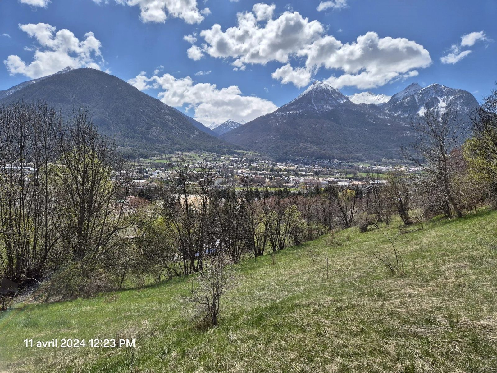
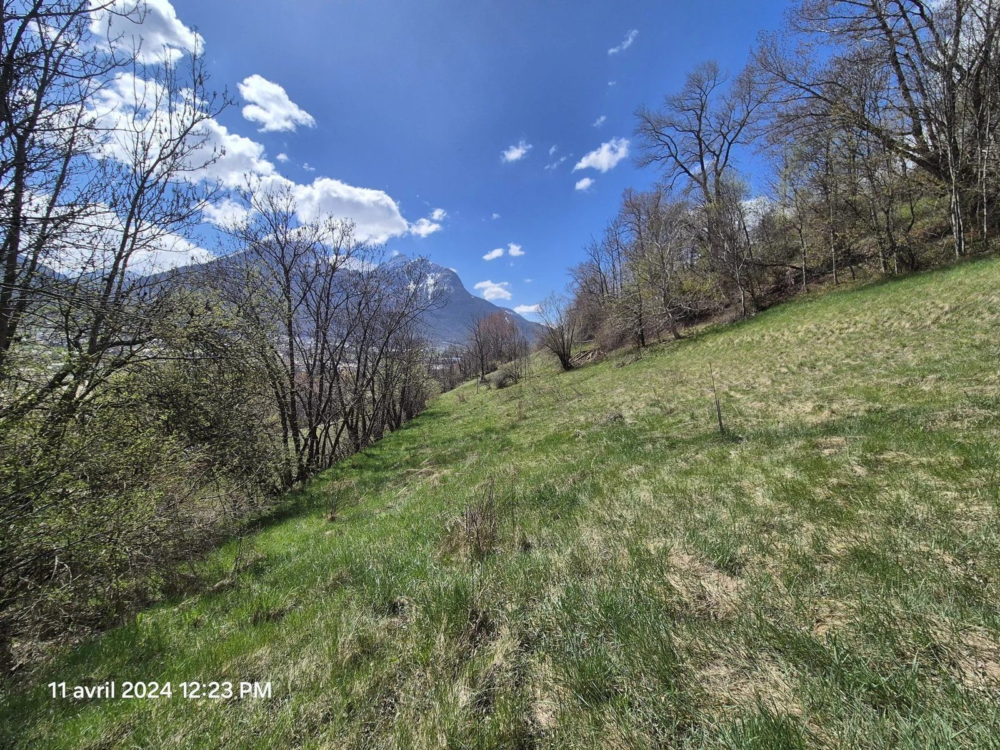
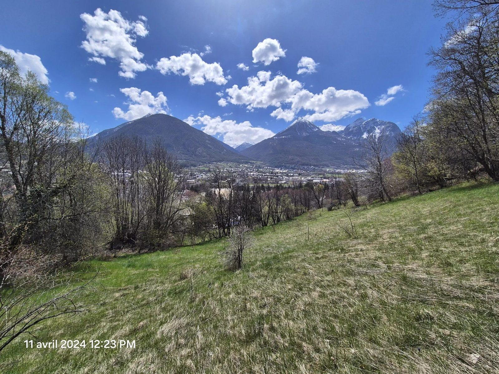
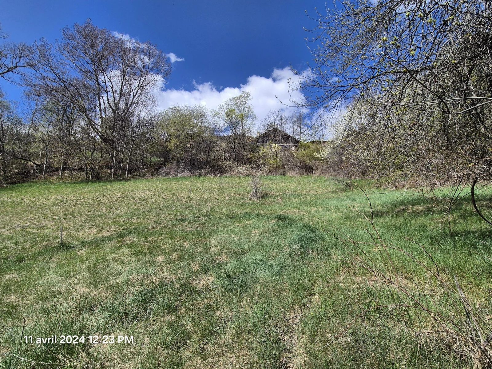
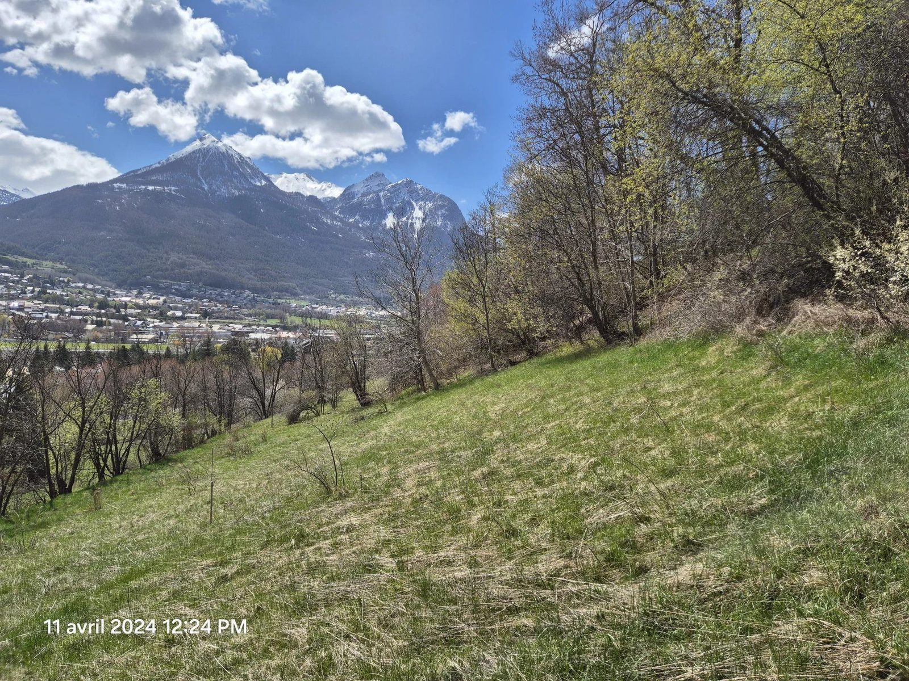

Terrain · Briançon
Terrain Constructible proche Centre Ville calme nature
537 000 €

Terrain Constructible Idéal avec Vue Montagne à Vendre
Découvrez ce magnifique terrain constructible et agricole de 3124 m² au total, niché dans un cadre enchanteur avec une vue imprenable sur les montagnes. Ce terrain en pente offre une opportunité unique pour les amateurs de nature et les investisseurs avisés.
Imaginez-vous cultiver vos propres récoltes ou construire votre rêve de maison dans cet environnement paisible et inspirant.
Sur les 1500m2 de terrain constructible un projet d'une belle construction ou de 2 constructions est possible. Le terrain agricole attenant vous garanti le calme et la vue.
Ne manquez pas cette occasion exceptionnelle de posséder un terrain avec une vue à couper le souffle et un potentiel de développement illimité. Contactez-nous dès aujourd'hui pour plus d'informations et pour organiser une visite.
Commodités : Au bord d'une route départementale peu fréquentée, À 5 minutes en voiture du centre ville, vous trouverez plusieurs commodités essentielles pour votre quotidien, telles qu'une école, un supermarché, et une pharmacie, et la proximité des psites de ski de Briançon Serre-Chevalier
Honoraires à la charge du vendeur. Les informations sur les risques auxquels ce bien est exposé sont disponibles sur le site Géorisques : georisques.gouv.fr.
Demander le dossier complet Voir l'annonce sur mon.expfrance.fr



